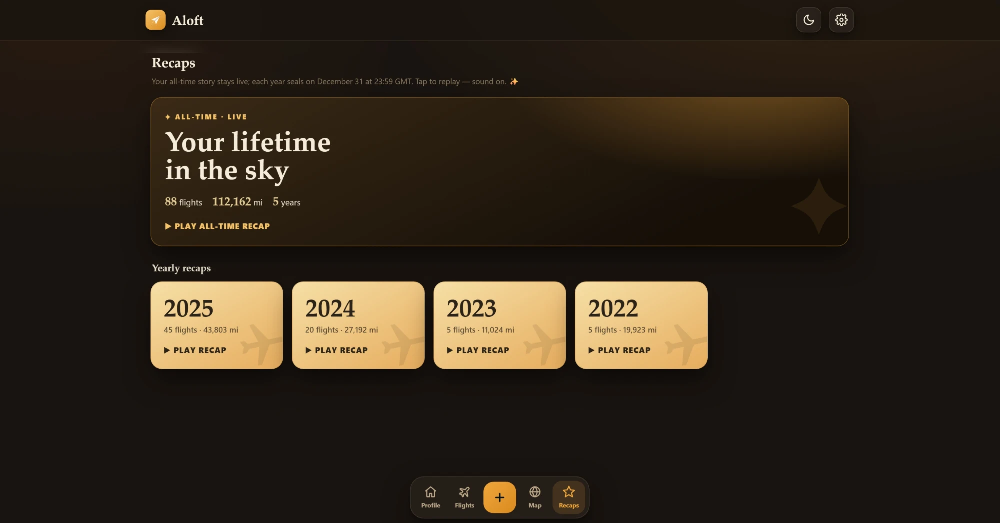
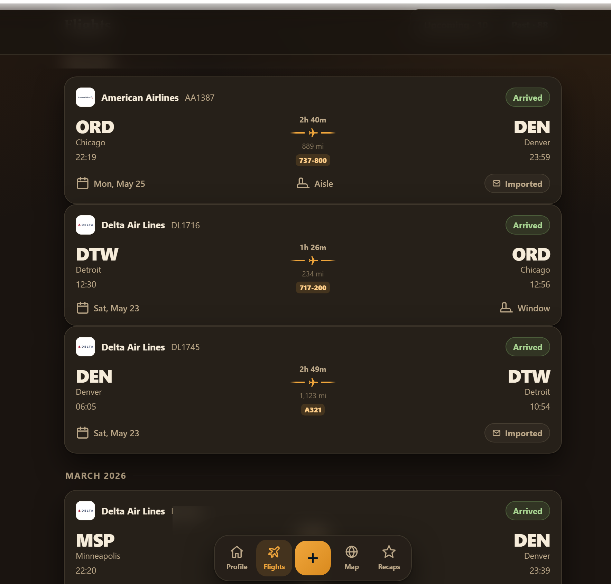
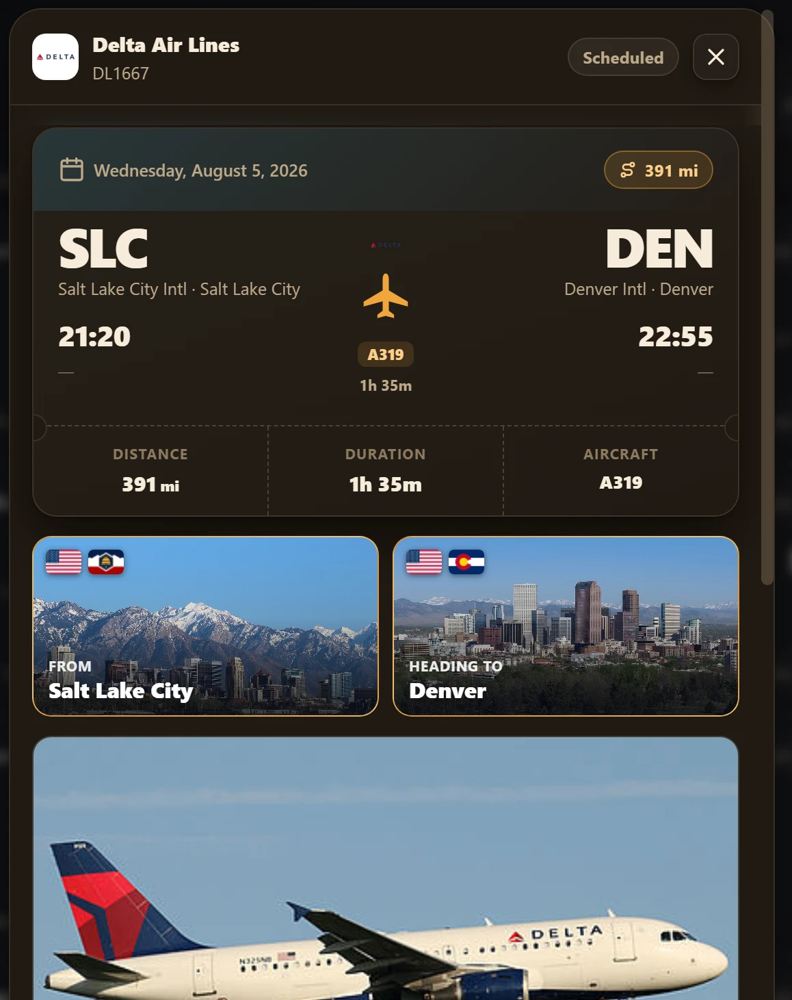
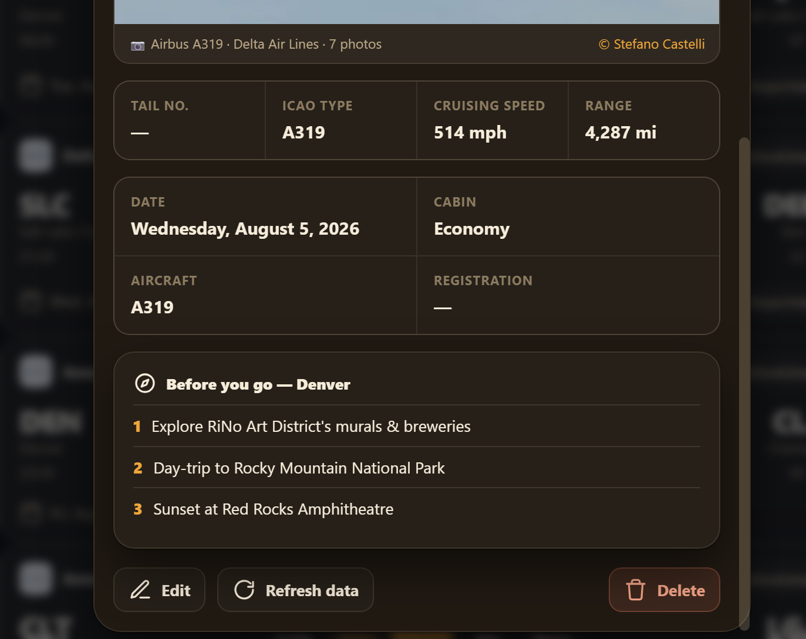

Home DashboardThe all-time view: an interactive Leaflet route map, boarding-pass stats bar, delay tracker, most-flown aircraft with live photography, top-airport/airline/aircraft/route/country leaderboards, and 5-year trend charts.
flighty-beta.vercel.app/recaps

Wrapped-Style RecapsA live all-time recap plus yearly recaps that seal on December 31 — a Spotify-Wrapped-style animated story of every year of flying.
flighty-beta.vercel.app/flights

Flight LogThe full flight history grouped by month, each entry showing route, duration, distance, aircraft, seat, and status — mailbox-imported or manually added.
flighty-beta.vercel.app

Flight DetailA single flight rendered as a boarding pass with destination city imagery, live schedule, and aircraft badge — auto-filled from the flight-lookup Edge Function.
flighty-beta.vercel.app

Aircraft & DestinationEnriched aircraft spec sheet (ICAO type, cruising speed, range) with real aircraft photography and an auto-generated "Before you go" destination guide.
Designed and shipped a full-stack flight-logging web app — 98 flights auto-filled, mapped, and analyzed, live in production.
Aloft is a personal flight logging web app I designed and built end-to-end: every flight I take is logged, mapped, and remembered. Type in an airline, flight number, and date, and the app auto-fills the rest — airports, terminals, gates, aircraft registration, scheduled versus actual times — via a live flight-data lookup I've since iterated through six versions. Beyond logging, Aloft turns the data into a full analytics dashboard: route maps, delay tracking, top-airport/airline/aircraft leaderboards, and Spotify-Wrapped-style animated recaps of every year of flying. The whole log is private to each account through Postgres Row-Level Security.
Designed a 48-field PostgreSQL schema capturing the complete flight record: departure/arrival airports with IATA/ICAO codes, coordinates and timezones, scheduled/estimated/actual times, aircraft registration and type, seat, cabin, and route distance.
Built and iterated a serverless flight-lookup Edge Function (TypeScript/Deno on Supabase) through six versions — auto-filling flight details from a live flight-data API and enriching each record with real aircraft photography, spec sheets (tail number, ICAO type, cruising speed, range), and destination city guides.
Rendered flight routes on an interactive Leaflet world map with year filtering — 98 flights logged and mapped to date, spanning 62 routes and 32 airports.
Built a boarding-pass-style stats dashboard (total flights, distance, flight time, airports, airlines) plus delay analytics tracking hours lost and average delay per flight.
Designed animated "Recap" videos in the style of Spotify Wrapped — a live all-time lifetime recap plus yearly recaps that seal on December 31 — alongside leaderboards (top airports, airlines, aircraft, routes, countries) and trend charts (flights per year, month, and weekday).
Enforced per-user privacy with Postgres Row-Level Security: every row is scoped to the owning account at the database layer, not just the UI.
Shipped as a single-page app deployed on Vercel with Supabase handling auth, database, and serverless functions.
Under the Hood
The entire frontend is one dependency-free HTML file (~3,600 lines) with a hand-rolled view router, an inline SVG icon system, and a two-mood theme (espresso dark / paper light) that follows the OS setting — Leaflet is the only vendored library, and Supabase (Postgres + GoTrue auth) is the only backend.
Ad-blocker-proof networking: Vercel rewrites /sb/:path* to the Supabase origin, and at boot the app health-checks that same-origin proxy and falls back to direct *.supabase.co — so browsers whose ad-blockers kill third-party Supabase requests still sign in.
The flight-lookup Edge Function is three services behind one endpoint: the AeroDataBox lookup normalised into the app's schema (choosing the flight segment whose local departure date matches the request), a Planespotters photo proxy (the API requires a custom User-Agent browsers can't set; returns multiple shots of the same tail so cards can rotate), and a Spotify embed-page parser that walks its __NEXT_DATA__ JSON to extract track URIs for recap soundtracks.
Defense in depth on that function: even though its URL is public, it re-verifies the caller's JWT against Supabase auth before spending third-party API quota — anonymous or key-only requests get a 401, and the AeroDataBox key never leaves the server.
Times are stored as UTC instants (scheduled / estimated / actual for both legs) and rendered in each airport's own timezone; every API response is also kept as raw jsonb on the row, so records can be re-enriched later without a new lookup.
All analytics are computed client-side from the raw rows — haversine great-circle distances, delay minutes, leaderboards, trend charts, and the recap slide sequence — and the map draws great-circle polylines with line weight scaled to route frequency. No server-side aggregation exists at all.
Row-Level Security is the entire multi-user story: four policies (select / insert / update / delete), each keyed on auth.uid() = user_id, isolate every account's flights at the database layer.